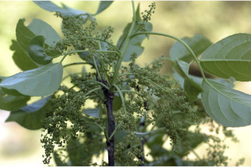
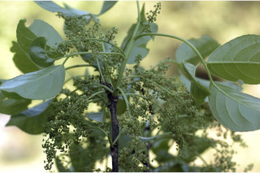

Large deciduous tree, up to 30 m tall.
30 ಮೀ.ವರೆಗೆ ಬೆಳೆಯುವ, ಎಲೆಯುದುರುವ ಮಾದರಿಯ ದೊಡ್ಡ ಗಾತ್ರದ ಮರಗಳು.
30 മീറ്റര് വരെ ഉയരമുളള, ഇലപൊഴിക്കുന്ന വന് മരങ്ങള്.
மிகப்பெரிய இலையுதிர் மரம், 30 மீ. உயரம் வரை வளரக்கூடியது.
Bark brownish, smooth or flaky when old; blaze pink.
ತೊಗಟೆ ಕಂದು ಬಣ್ಣದಲ್ಲಿದ್ದು ಬಲಿತಾಗ ನಯವಾಗಿ ಅಥವಾ ಚಕ್ಕೆ ರೂಪದಲ್ಲಿರುತ್ತವೆ;ಕಚ್ಚು ಮಾಡಿದ ಜಾಗ ನಸುಗೆಂಪು ಬಣ್ಣ ಹೊಂದಿರುತ್ತದೆ.
മിനുസമുളളതോ, മൂക്കുമ്പോള് ഇളകിയടര്ന്ന് പോകുന്നതോ ആയ, തവിട്ട് നിറത്തിലുളള പുറംതൊലി; വെട്ട്പാടിന് പിങ്ക്നിറം.
மரத்தின் பட்டை ப்ரவுன் நிறமானது, வழுவழுப்பானது அல்லது முதிர்ந்த மரத்தில் செதில்கள் போன்று உதிருபவை; உள்பட்டை பிங்க் நிறமானது.
Branchlets terete, glabrous.
ಕಿರುಕೊಂಬೆಗಳು ದುಂಡಾಗಿದ್ದು ರೋಮರಹಿತವಾಗಿರುತ್ತವೆ.
അരോമിലവും ഉരുണ്ടതുമായ ഉപശാഖകള്.
சிறிய நுனிக்கிளைகள் குறுக்குவெட்டுத் தோற்றத்தில் வளையமானது, உரோமங்களற்றது.
Cut end of bark with sticky red sap.
ತೊಗಟೆಯ ಕತ್ತರಿಸಿದ ಜಾಗ ಕೆಂಪು ಅಂಟುಳ್ಳ ಸಸ್ಯ ರಸ ಸಮೇತವಾಗಿರುತ್ತದೆ.
പുറംതൊലിയിലെ മുറിവുകളില് നിന്നും ഒട്ടുന്ന ചുവന്ന സ്രവം വരുന്നതാണ്.
மரப்பட்டை வெட்டுப்படும் போது ஒட்டக்கூடிய சிவப்பு நிறமான சாறுயுடையது.
Leaves compound, trifoliate, alternate, spiral; stipule to 0.6 cm long, linear lanceolate, caducous; rachis 5-15.5 cm long, pulvinate at base, terete, glabrous; petiolule of side leaflets to 1 cm long, middle one to 3.5 cm long; leaflets elliptic to broadly elliptic, usually middle leaflet slightly larger, 7.5-13 x 3.5-9 cm, apex caudate or caudate - acuminate, base acute to rounded, margin crenate, coriaceous; secondary_nerves 5-7 pairs, forked with glabrous domatia in axils; tertiary_nerves reticulo-percurrent, not prominent.
ಎಲೆಗಳು ಸಂಯುಕ್ತ ಮತ್ತು ಪರ್ಯಾಯ ಹಾಗೂ ಜೋಡನಾ ಮಾದರಿಯಲ್ಲಿದ್ದು ತ್ರಿಪರ್ಣಿಕೆ ರೀತಿಯವುಗಳಾಗಿರುತ್ತವೆ; ಕಾವಿನೆಲೆಗಳು ರೇಖಾತ್ಮಕ-ಭರ್ಜಿಯ ಆಕಾರ ಹೊಂದಿದ್ದು ಉದುರಿ ಹೋಗುವ ಮಾದರಿಯವು;ಸಂಯುಕ್ತ ಎಲೆಗಳ ನಡುಕಾಂಡ ದುಂಡಾಗಿದ್ದು 5 ರಿಂದ 15.5 ಸೆಂ.ಮೀ. ಉದ್ದ ಹೊಂದಿದ್ದು ರೋಮರಹಿತವಾಗಿರುತ್ತವೆ ಮತ್ತು ಬುಡದಲ್ಲಿ ಉಬ್ಬನ್ನು ಹೊಂದಿರುತ್ತವೆ; ಪಾರ್ಶ್ವದ ಎಲೆಗಳ ತೊಟ್ಟು 1 ಸೆಂ.ಮೀ. ವರೆಗಿನ ಉದ್ದವಿದ್ದು, ಮಧ್ಯದಲ್ಲಿರುವ ಕಿರುಎಲೆಯ ತೊಟ್ಟು 3.5 ಸೆಂ.ಮೀ.ವರೆಗಿನ ಉದ್ದವನ್ನು ಹೊಂದಿರುತ್ತದೆ;ಕಿರುಪತ್ರಗಳು ಅಂಡವೃತ್ತದಿಂದ ಹಿಡಿದು ವಿಶಾಲ ಅಂಡವೃತ್ತದ ಆಕಾರದಲ್ಲಿರುತ್ತವೆ, ಸಾಮಾನ್ಯವಾಗಿ ಮಧ್ಯದ ಕಿರುಎಲೆ ಕೊಂಚ ಹೆಚ್ಚು ಗಾತ್ರ ಹೊಂದಿರುತ್ತದೆ, 7.5 -13 X 3.5 - 9 ಸೆಂ ಮೀ. ಗಾತ್ರ ಹೊಂದಿದ್ದು,ಬಾಲರೂಪಿ ಅಥವಾ ಬಾಲರೂಪಿ - ಕ್ರಮೇಣ ಚೂಪಾಗುವ ಮಾದರಿಯ ತುದಿ, ಚೂಪಾದುದರಿಂದ ದುಂಡಾದ ಮಾದರಿವರೆಗಿನ ಬುಡವನ್ನು ಹೊಂದಿರುತ್ತವೆ, ಅಂಚು ದುಂಡೇಣುಗಳನ್ನು ಹೊಂದಿರುತ್ತದೆ, ಮೇಲ್ಮೈತೊಗಲನ್ನೋಲುವ ರೀತಿಯದ್ದಾಗಿರುತ್ತದೆ; ಎರಡನೇ ದರ್ಜೆಯ ನಾಳಗಳು 5 – 7 ಕವಲೊಡೆದ ಜೋಡಿಗಳಿದ್ದು ಅಕ್ಷಾಕಂಕುಳಿನಲ್ಲಿ ರೋಮರಹಿತ ಸಹಜೀವಿ ಗೂಡುಗಳ ಸಮೇತವಿರುತ್ತವೆ;ಮೂರನೇ ದರ್ಜೆಯ ನಾಳಗಳು ಜಾಲಬಂಧ ನಾಳವಿನ್ಯಾಸದಲ್ಲಿದ್ದು ಎಲೆ ದಿಂಡಿಗೆ ಅಡ್ಡವಾಗಿ ಕೂಡುವಂತಹ ಮಾದರಿಯವು.
ഏകാന്തരക്രമത്തില്, സര്പ്പിളമായി അടുക്കിയ ത്രിപത്രക ബഹുപത്രങ്ങള്, എളുപ്പം കൊഴിഞ്ഞ് വീഴുന്ന 0.6 സെ.മീ വരെ നീളമുളള, രേഖീയ-കുന്താകാരത്തിലുളള അനുപര്ണ്ണങ്ങള്; കീഴറ്റംവീര്ത്തിരിക്കുന്ന മുഖ്യാക്ഷം 5 സെ.മീ മുതല് 15.5 സെ.മീ വരെ നീളമുളള, ഉരുണ്ടതും, അരോമിലവും ആണ്; പാര്ശ്വത്തിലുളള പത്രകങ്ങളുടെ ഞെട്ടിന് 1 സെ.മീ വരെ നീളം, മധ്യത്തിലുളളതിന് 3.5 സെ.മീ വരെ നീളം; പത്രകങ്ങള് ദീര്ഘവൃത്തംതൊട്ട് വീതിയേറിയ ദീര്ഘവൃത്തം വരെയുമാണ്, സാധാരണയായി നടുക്കുളള പത്രകം ഒരല്പ്പം വലുതായിരിക്കും, 7.5 സെ.മീ മുതല് 13 സെ.മീ വരെ നീളവും 3.5 സെ.മീ മുതല് 9 സെ.മീ വരെ വീതിയുമുണ്ടാകും; പത്രാഗ്രം വാലുളളതോ ദീര്ഘമായ വാലുളളതോ ആണ്, പത്രാധാരം നിശിതം തൊട്ട് വൃത്താകാരം വരെയാകാം, ദന്തിതമായ അരികുകള്, ചര്മ്മില പ്രകൃതം; കക്ഷങ്ങളില് ഡൊമേഷ്യയുളള, വിഭജിതമായ 5 മുതല് 7 വരെ ജോഡി ദ്വിതീയ ഞരമ്പുകള്; വ്യക്തമല്ലാത്ത, ജാലിത-പെര്കറന്റ് വിധത്തിലുളള ത്രിതീയ ഞരമ്പുകള്.
இலைகள், மூவ்விலை கூட்டிலைகள், மாற்றுஅடுக்கமானவை, சுழல் போன்று அமைந்தவை; இலையடிச்செதில் 0.6 செ.மீ. நீளமானது, கோட்டு-ஈட்டி வடிவானது, எளிதில் உதிரக்கூடியது; கூட்டிலையின் மையக்காம்பு 5-15.5 செ.மீ. நீளமானது, பல்வினேட், குறுக்குவெட்டுத் தோற்றத்தில் வளையமானது, உரோமங்களற்றது, பக்கவாட்டிலுள்ள சிற்றிலையின் காம்பு 1 செ.மீ. நீளமானது, நடுவிலுள்ள சிற்றிலையின் காம்பு 3.5 செ.மீ. நீளமானது; சிற்றிலையின் அலகு நீள்வட்டம் முதல் அகன்ற நீள்வட்டமானது, பொதுவாக மத்தியிலுள்ள சிற்றிலை பெரியது, 7.5-13 X 3.5-9 செ.மீ., சிற்றிலையின் அலகின் நுனி வால் அல்லது வால்-அதிக்கூரியது, அலகின் தளம் கூரியது முதல் வட்டமானது, அலகின் விளிம்பு பிறை போன்ற பற்களுடையது, கோரியேசியஸ்; இரண்டாம் நிலை நரம்புகள் 5-7 ஜோடிகள், அலகின் பின்புறத்தில் நரம்புகள் கிளைக்குமிடத்தில் உரோமங்களற்ற டொமேஸ்சியா உடையது; மூன்றாம் நிலை நரம்புகள் வலைப்பின்னல்-பெர்க்கரண்ட் தெளிவற்றது.
Inflorescence axillary panicles; flowers unisexual, dioecious, green.
ಪುಷ್ಪಮಂಜರಿಗಳು ಕವಲೊಡೆಯುವ ಮಾದರಿಯವು; ಹೂಗಳು ಏಕಲಿಂಗಿಗಳಾಗಿದ್ದು ಗಂಡು ಮತ್ತು ಹೆಣ್ಣು ಹೂಗಳು ಪ್ರತ್ಯೇಕ ಸಸ್ಯಗಳಲ್ಲಿದ್ದು ಹಸಿರು ಬಣ್ಣ ಹೊಂದಿರುತ್ತವೆ.
പൂങ്കുലകള് കക്ഷീയ പാനിക്കിളുകളാണ്; പച്ചനിറത്തിലുളള ഏകലിംഗികളായ പൂക്കള്, ഡയീഷ്യസാണ്.
மஞ்சரி தண்டின் இலைக்கோணங்களில் காணப்படும் பேனிக்கிள்; மலர்கள் ஓர்பாலானவை, ஈரகம் கொண்டவை, பச்சை நிறமானது.
Berry, globose, 1.3 cm across; seeds 6-8, oblong, trigonous.
ಬೆರ್ರಿಗಳು 1.3 ಸೆಂ.ಮೀ ಅಡ್ಡಗಳತೆ ಹೊಂದಿದ್ದು, ಗೋಳಾಕಾರದಲ್ಲಿದ್ದು 6 ರಿಂದ 8 ಚತುರಸ್ರಾಕಾರದ ಹಾಗೂ ಮೂರು ಕೋನಗಳುಳ್ಳ ಬೀಜಗಳನ್ನೊಳಗೊಂಡಿರುತ್ತವೆ.
6 മുതല് 8 വരെ, മുക്കോണുളള, ആയതാകാര വിത്തുകളുളള കായ, 1.3 സെ.മീ കുറുകേയുളള ഗോളാകാര ബെറിയാണ്.
முழுச்சதைகனி (பெர்ரி), கோளவடிவானது, 1.3 செ.மீ. குறுக்களவுடையது; விதைகள் 6-8, நீள்சதுர வடிவானது, முக்கோண வடிவானது.


 
